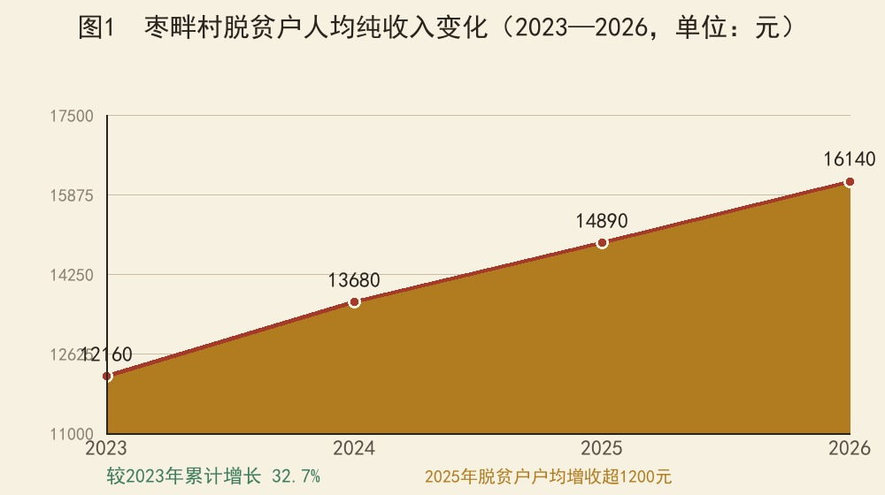
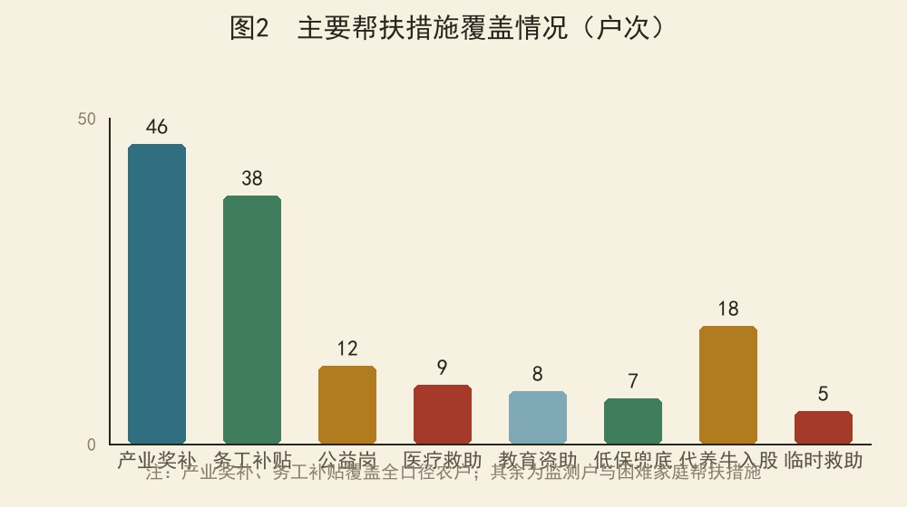
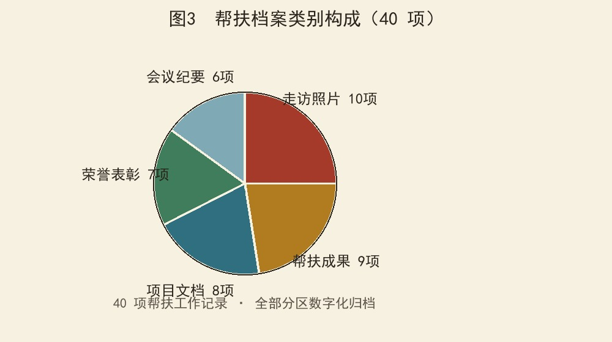

枣畔村位于山西省长治市黎城县东阳关镇，地处太行山东麓，距县城约17公里。全村域面积约6.8平方公里，耕地1800余亩，以山场林地为主，属典型的黄土丘陵沟壑地貌。村庄依山就势而建，层层梯田沿坡展开，漳河支流自西北向东南穿村而过，四季分明，光照充足，昼夜温差大，适宜杂粮与经济林果种植，素有"春赏连翘花、秋收满坡金"之说。
村内交通以一条镇级公路与外界相连，距东阳关镇区约5公里，日常通勤、农资运输、农产品外销均依托该路。受地形限制，村内街巷曲折起伏，部分巷道年久失修，雨季泥泞难行；通讯网络已实现全村覆盖，电商进村为农副产品销售打开了新的通道。整体上看，村庄生态本底良好、区位潜力尚可，但基础设施水平与产业发展程度仍处于起步阶段。
全村户籍人口144户386人，其中常住人口89人，青壮年劳动力多外出务工，常年在外务工55户，留守老人31人、留守儿童12人，人口空心化、老龄化特征明显。农户以种养业和务工为主要生计，收入水平整体不高，收入结构偏单一。
村级组织方面，村党支部下设2个党小组，共有党员19名，其中60岁以上党员占比过半，队伍老化问题突出；村委会下设4个村民小组。2024年以来，在镇党委领导下，村两委班子运行总体平稳，但集体经济薄弱、干部视野不宽、治理能力不足的问题较为突出，亟待通过帮扶补齐短板。
主导产业为小麦、玉米等传统粮食种植，特色种植以连翘、核桃、小米为主。连翘种植已具一定规模，是群众增收的重要来源，每年春季连翘花海连绵，兼具经济与景观价值；核桃林集中在村北山坡，品种逐步改良；小米因昼夜温差大、生长周期长，品质优良，在周边市场小有名气。
村内具有养牛传统，饲草资源丰富，青贮玉米、秸秆等饲料原料充足，具备发展养殖业的天然条件。2024年村集体经济收入8.2万元，来源单一，主要依靠光伏收益与土地流转。整体看，产业基础薄弱、链条短、抗风险能力弱，组织化程度低，群众增收渠道有待拓宽。
一是基础设施欠账较多，部分巷道尚未硬化，饮水保障存在季节性不足，公共活动场所功能不全；二是产业基础薄弱，种植结构单一，缺乏龙头企业和专业合作社带动，农产品以原材料销售为主，附加值低；三是集体经济薄弱，自我造血功能不足，村级公共服务缺乏财力支撑；四是劳动力外流严重，老龄化、空心化并存，产业发展缺人手、缺能人。这些短板，正是驻村帮扶工作的主攻方向，也是制定帮扶措施的现实依据。
面对上述短板，驻村工作队坚持问题导向、目标导向、结果导向，把帮扶措施与群众需求精准对接，把短期攻坚与长效机制统筹推进，一步一个脚印地把短板补起来、把基础强起来。
两年来，帮扶工作始终围绕"守底线、抓发展、促振兴"主线展开：以入户走访摸清底数，以动态监测守牢底线，以产业项目增强造血，以党建引领凝聚合力，以机制建设巩固长效，帮扶工作呈现出由点到面、由表及里的纵深推进态势。
自2024年7月15日工作队进驻以来，帮扶工作按照"一年打基础、两年见成效、三年成长效"的总体思路稳步推进，先后经历了摸清底数、健全机制、产业破题、巩固提升四个阶段，形成了以走访为基础、以监测为底线、以产业为核心、以党建为引领、以机制为保障的工作格局。八个阶段环环相扣、层层递进，具体历程如下。
2024年7月15日，按照组织选派，张海波同志到枣畔村担任驻村第一书记，驻村工作队3人正式进驻。报到当天即召开村两委会，完成与上一任工作队的档案资料、项目台账、未决事项交接，并亮明"驻村先驻心，服务先服众"的工作态度。
到岗首月，工作队完成三件基础性工作：一是与村两委班子逐人座谈，摸清班子运行情况与干部思想动态；二是遍走村内街巷、田间地头，绘制全村第一张"民情地图"，标注11户监测对象户位；三是建立"1+3+N"包联体系，3名工作队员分片包组、责任到人，为后续各项工作打下组织基础。
聚焦"三类重点"开展全覆盖走访，坚持"三问三看"工作法——问收入、问健康、问诉求，看住房、看饮水、看环境卫生，边问边记，逐户填写《入户走访登记表》。历时一个月完成144户386人首轮全覆盖走访，常住89人重点走访3次以上，逐户建立"一户一档"民情档案。
针对白天外出务工不在家的农户，工作队利用早晚时间"错时走访"，做到"户户到、人人见"；对常年外出务工的55户，通过电话、微信逐一联系核实，确保底数清、情况明、数据实。走访汇总共性诉求34条，分类建立问题台账，能当场解决的当场解决，不能当场解决的明确责任人和答复时限，实行"周更新、月销号"，并在村务公开栏公示办理进展。
将11户27人脱贫户/监测户全部纳入动态监测，其中脱贫户9户22人、监测对象2户5人。建立"两表一图"监测台账，逐月更新收入明细表、支出明细表与收入变化趋势图，实行"一月一算账、一季一研判"。
坚持日常排查、集中排查、信息比对三结合，重点关注因病、因灾、因学、因突发事件等返贫致贫风险，发现收入骤减、支出骤增等苗头性问题第一时间预警、第一时间介入。2025年以来识别处置风险线索6条，2户监测对象风险消除并标注退出，其余9户收入稳定增长，牢牢守住了不发生规模性返贫的底线。
针对集体经济薄弱、脱贫户增收渠道单一的问题，工作队在充分调研、实地考察周边养殖场的基础上，于2025年6月推动成立村集体养殖合作社，8月首批购入西门塔尔牛入栏，采取"村集体经济组织+合作社+农户"模式运营，统一防疫、统一饲养、统一销售。
2026年，代养牛收益兑现、分红到户、项目跟踪被列为驻村工作第一重点：建立月度跟踪台账，存栏、饲喂、防疫、成本逐月记录、季度公开；收益分配坚持"保底+分红"，优先保障脱贫户、监测户保底收益；2026年6月完成上半年收益核算，分红方案经村民代表会议审议后公示，正按计划推进到户兑现。
组织党员干部、公益岗人员、志愿者对村内主干道、背街小巷、房前屋后开展集中清理，清除陈年垃圾点5处，清运垃圾杂物10余车，规范柴草堆放。同时推动建立"门前三包+公益岗+积分制"长效管护机制，"门前三包"写入村规民约，划定责任区、明确责任人。
在村内主街道设置分类垃圾桶，推行垃圾分类"户分类、村收集、镇转运"试点，通过入户讲解、现场示范、积分奖励普及分类知识；创建人居环境示范巷，评选"美丽庭院"12户，以点带面、示范引领，村容村貌焕然一新，实现了从"集中攻坚"到"常态长效"的转变。
规范落实"三会一课"制度，每月召开支部委员会、每季度召开党员大会并上党课，全程记录、留痕存档，重大事项先党内酝酿、再提交村民会议；坚持每月主题党日特色化开展，把政策宣讲、志愿服务、环境整治、帮扶慰问融入其中，变"念文件"为"办实事"。
设立党员先锋岗、党员责任区，党员亮身份、作表率，在防返贫监测、人居环境整治、防汛防火、矛盾调解等工作中带头示范；结合网格化治理，党员担任网格联系员，打通联系服务群众"最后一米"；建立党员结对帮扶机制，1名党员结对联系若干困难群众，先后帮助解决就医、就业、住房等实际困难40余件，党群关系更加密切。
落实防返贫监测"一键申报"机制，提供手机小程序申报、村委服务点代办、包联干部帮报、亲属代报四种方式；申报流程图公开上墙，大喇叭定期广播，微信群逐户推送，入户走访逐人讲解，实现"人人知晓、户户会用"；对不会操作的老人户，由包联党员、网格员上门代办。
严格执行"农户自主申报→村级核实→乡镇审核→县级审定"流程，村级5个工作日内入户核查，经村民代表会议评议公示后上报流转；建立申报受理台账，逐件登记、逐件反馈，做到"件件有着落、事事有回音"。机制运行以来累计受理申报8件，纳入监测1件、落实临时救助2件，无一积压推诿。
围绕"产业+就业"双轮驱动促增收：落实特色产业奖补政策，逐户核实种植面积、登记造册，累计兑现奖补资金6.8万元；建立务工人员信息台账，落实跨省务工交通补贴、稳岗就业补贴4.2万元，做到应补尽补、不漏一人。
依托单位帮扶资源与电商渠道开展消费帮扶，组织农副产品进单位、进食堂，开设电商帮销专场，累计帮销连翘、核桃、小米等农副产品18.6万元；建立岗位信息推送机制，推送就业岗位80余个、达成就业意向12人；组织连翘管护、核桃种植、肉牛养殖等农技培训6场、覆盖200余人次，脱贫户户均增收超1200元。
上述八个阶段，构成了枣畔村帮扶工作的完整闭环：走访是基础，监测是底线，产业是核心，整治是面貌，党建是保证，申报是关口，增收是目标。每个阶段既相对独立，又前后衔接、相互支撑，共同织就了一张覆盖全村、贯穿全程的帮扶网络。
2026年以来，帮扶工作进入巩固提升期，重点转向收益兑现、机制固化与成果拓展，确保帮扶政策不断档、帮扶措施不松劲、帮扶成效不缩水，以更加扎实的工作巩固拓展脱贫攻坚成果同乡村振兴有效衔接。
项目采取"村集体经济组织+合作社+农户"模式：农户以肉牛入股合作社代养，合作社统一防疫、统一饲养、统一销售，出栏收益扣除成本后按比例分红，村集体经济组织作为发起方与监管方保障各方权益。合作社设专人负责日常饲养与台账管理，聘请有经验的养殖户担任技术指导，确保养殖规范、成本可控。
收益分配坚持"保底+分红"：优先保障入股农户特别是脱贫户、监测户的保底收益，再按出资比例分红，同时提取一定比例用于村集体积累与合作社发展，形成"农户增收、集体受益、项目可持续"的良性循环。2026年度项目推进突出三个重点：一是收益兑现，强化成本管控、对接稳定销路、规范收益核算；二是分红到户，分红方案经村民代表会议审议后公示，逐户兑现；三是项目跟踪，存栏、饲喂、防疫、成本逐月记录、季度公开，让群众全程看得见、信得过。
以"两表一图"（收入明细表、支出明细表、收入变化趋势图）为核心台账，逐月更新家庭收支，动态掌握变化；以"一月一算账、一季一研判"为运行节奏，发现收入骤减、支出骤增等苗头性问题第一时间预警、第一时间介入；以"日常排查+集中排查+信息比对"为排查机制，确保应纳尽纳、应帮尽帮、动态管理。
针对每户监测对象落实"一户一策"帮扶，综合运用产业奖补、代养牛分红、临时救助、医疗救助、务工补贴、公益岗等措施，优先安排公益性岗位，做到帮扶精准、风险可控。同时注重扶志扶智结合，引导监测对象增强内生动力，实现由"被动受助"向"主动增收"转变。
畅通农户自主申报渠道，提供手机小程序、村委服务点代办、包联干部帮报、亲属代报四种申报方式，让确有困难的群众能够第一时间被识别、被帮扶；严格"农户自主申报→村级核实→乡镇审核→县级审定"流程，村级5个工作日内入户核查，评议公示后上报流转，全程公开透明。
建立申报受理台账，逐件登记申报时间、对象、核实结果、办理进展，逐件反馈办理结果。该机制让"群众张嘴、干部跑腿"成为常态，变被动排查为主动申报、关口前移，是防止返贫的第一道关口，也是联系服务群众的重要纽带。
建立"门前三包+公益岗+积分制"长效管护机制：农户包门前卫生、绿化、秩序，公益岗人员负责公共区域日常保洁，环境整治纳入积分制管理并与评优挂钩；"门前三包"写入村规民约，划定责任区、明确责任人，确保管护有制度、有人员、有考核。
推行垃圾分类"户分类、村收集、镇转运"模式，设置分类收集点40组，安排专人负责收集清运；通过入户讲解、现场示范、积分奖励普及分类知识，村民知晓率、参与率明显提升。以示范巷创建和"美丽庭院"评选为引领，组织观摩学习，形成比学赶超氛围，实现整治成果长效巩固。
把党建引领贯穿帮扶全过程：规范落实"三会一课"，重大事项先党内酝酿、再提交村民会议，让制度运转有实效、见真章；每月主题党日与政策宣讲、志愿服务、环境整治等结合，面向群众开放，让群众看到党员身影、感受到组织温度。
设立党员先锋岗、责任区，结合网格化治理，党员担任网格联系员，包联到户、服务到人；建立党员结对帮扶机制，1名党员结对联系若干困难群众、独居老人、留守儿童家庭，定期走访、及时纾困。通过党建引领，村级组织的凝聚力、战斗力明显增强，为帮扶工作提供了坚强的组织保证。
除上述五个重点项目外，工作队还统筹推进饮水工程提升改造、巷道硬化、农技培训、岗位推送、消费帮扶等民生实事，形成了"重点项目引领、民生实事支撑"的工作体系。
每一个项目都建立了"一名责任人、一套方案、一本台账、一张时间表"的推进机制，实行周调度、月研判、季评议，确保项目落地有声、推进有序、成效可查。
两年帮扶，成效体现在一组组实打实的数据上。脱贫户人均纯收入从2023年的12160元增长至2026年的16140元，累计增长32.7%；村集体经济收入从2024年的8.2万元增长至2026年的15.6万元，接近翻番；监测对象风险消除2户，全村未发生返贫致贫情况。主要指标变化如下表所示。
| 指标 | 2024年 | 2026年 | 变化 |
|---|---|---|---|
| 村集体经济收入 | 8.2万元 | 15.6万元 | 增长90% |
| 脱贫户人均纯收入 | 12160元 | 16140元 | 增长32.7% |
| 村内巷道硬化 | 0米 | 1200米 | 出行条件改善 |
| 分类收集点 | 0组 | 40组 | 垃圾分类全覆盖 |
| 监测对象风险消除 | 0户 | 2户 | 动态清零推进 |
| 消费帮扶帮销 | 0万元 | 18.6万元 | 户均增收超1200元 |
| 产业奖补兑现 | 0万元 | 6.8万元 | 应奖尽奖 |
| 务工补贴兑现 | 0万元 | 4.2万元 | 应补尽补 |



从走访、监测到产业、就业，帮扶措施实现了对监测对象和困难家庭的全覆盖：产业奖补覆盖46户次、务工补贴38户次、代养牛入股18头（户）、公益岗安置12人，医疗救助、教育资助、低保兜底、临时救助等措施同步跟进，形成了"产业+就业+兜底"三位一体的帮扶格局。
数据的背后是方法：全覆盖走访教会我们"脚底板下出真知"；两表一图教会我们"算账是最实在的关怀"；保底分红教会我们"让群众在制度安排中受益"。这些方法源于实践、用于实践，将在今后的工作中持续发挥效用。
在成果沉淀方面，全村形成各类帮扶档案40项，涵盖走访照片、项目文档、会议纪要、帮扶成果、荣誉表彰五大类别，全部实现数字化归档；代养牛项目作为产业帮扶典型案例在县级交流推广，驻村工作先后获评全镇先进基层党组织、县级优秀驻村工作队，群众满意度持续提升。
数据指标之外，变化同样发生在群众身边：村口的路灯亮了，巷道的路平了，公开栏的账目清了，群众的笑容多了。这些看似细小的变化，正是帮扶工作落到实处的生动注脚。同时我们也清醒地看到，产业基础仍不稳固、集体经济仍显薄弱、人才队伍仍需加强，帮扶工作任重道远，不能有丝毫松劲懈怠。
数据的背后是故事，故事里是真实的枣畔人。选取三则典型案例，从一个家庭的账本、一次及时的救助、一片连翘地的变化，感受帮扶工作的温度与力度。
东组3号王大姐家，户主患慢性病，医疗支出大，是村里第一批入股代养牛的农户。2025年8月，她家2头西门塔尔牛入栏，由合作社统一饲养。从入栏那天起，王大姐就养成了记"牛账本"的习惯：饲料多少斤、防疫几次、合作社季度公开的存栏情况，一笔一笔都记着。
2026年6月，上半年收益核算公示，她家预计分得保底收益加分红4000余元。"以前守着几亩地，日子紧巴巴；现在牛在棚里长，账在手里记，心里踏实。"她笑着说。像王大姐这样入股的脱贫户、监测户，全村共有8户。代养牛，养的不只是牛，更是群众对村集体的信任，是产业帮扶的成色。
2025年3月，东组9号刘大哥家突发变故：户主确诊重病，自付医疗支出一下子压垮了这个四口之家。村里网格员第一时间协助其通过"一键报贫"申报，村级5个工作日内完成入户核实，经评议公示后按程序上报，很快纳入突发严重困难户监测。
随后，临时救助、医疗救助、大病保险、教育资助、代养牛入股帮扶措施逐一落地，2025年家庭收入较上年不降反增。"申报没跑一步冤枉路，政策件件都到账。"刘大哥的妻子红着眼眶说。这一案例，验证了"一键报贫"机制在最关键时刻的价值——把识别关口前移，把兜底保障做实。
北组6号郭大叔，过去种地凭老经验，连翘管护跟不上，产量上不去。2025年起，驻村工作队帮他申报了3亩连翘产业奖补，又拉着他参加农技培训：剪枝、施肥、病虫害防治，一节不落。
2025年秋，他家的连翘亩产比往年多了两成，加上消费帮扶帮销，当年增收3000多元。"过去觉得种地就是看天吃饭，现在才知道，技术就是钱。"郭大叔的连翘地，成了村里"产业奖补+农技培训"模式的活教材，也带动周边农户学技术、扩规模，特色种植面积稳步扩大。
三则案例，讲述的虽是三家普通农户的故事，折射的却是整个村庄的变化：代养牛让农户有了"看得见的产业"，一键报贫让困难家庭有了"找得到的门路"，产业奖补让特色种植有了"用得上的技术"。案例背后的机制与温度，正是驻村帮扶的意义所在。
驻村帮扶千头万绪，党建引领一抓就灵。两年实践充分证明，只有把村党组织建强、把党员作用发挥好，帮扶工作才有主心骨、群众才有带头人。"三会一课"规范了，主题党日实起来了，党员先锋岗立起来了，村干部干事创业的劲头也就上来了。帮扶工作队既是战斗队，也是播种机，要把党的组织优势转化为治理优势和发展优势。
帮扶不能"大水漫灌"，必须"精准滴灌"。从"三问三看"全覆盖走访到"一户一档"民情档案，从"两表一图"监测台账到"一户一策"帮扶计划，每一项工作都以精准为标尺。只有底数清、情况明，才能对症下药、靶向施策；只有把工作做到群众心坎上，帮扶才能见实效、得民心。
防止返贫、实现振兴，最终要靠产业。代养牛项目探索出的"村集体经济组织+合作社+农户"模式，把分散的农户组织起来，把有限的资源整合起来，实现了农户增收与集体积累的双赢。实践证明，找对产业、建好机制、算清细账，集体经济就有了源头活水，帮扶成果就有了坚实基础。
从入户走访到一键报贫，从门前三包到美丽庭院，每一项工作的背后都是群众路线。把政策讲到炕头上，把服务送到家门口，把账目晒在公开栏里，群众才会从"旁观者"变成"参与者"，帮扶工作才能赢得信任、凝聚合力。群众的获得感、满意度，是检验帮扶成效最硬的标准。
整治一阵风、帮扶一时热，都难以持续。枣畔村的实践表明，长效管护机制、监测预警机制、申报反馈机制、利益联结机制，是帮扶成果不反弹、可持续的根本保障。机制建设永远在路上，必须一张蓝图绘到底、一任接着一任干，把短期帮扶转化为长期治理，把"输血"转化为"造血"。
一是全力抓好2026年代养牛收益兑现与分红到户，确保项目红利实实在在落到群众手中；二是持续巩固防返贫监测成果，健全常态化排查预警机制，坚决守住不发生规模性返贫的底线；三是深化人居环境长效管护与垃圾分类试点，建设宜居宜业和美乡村；四是拓展消费帮扶与就业服务渠道，推动连翘、核桃、小米等特色产业提质增效；五是加强村党组织建设与乡土人才培育，留下一支带不走的工作队，让枣畔村在乡村振兴的道路上行稳致远。
驻村帮扶，驻的是村，帮的是民，扶的是志与智。枣畔村的每一步变化，都离不开组织的关怀、各级的支持与群众的奋斗。我们坚信，只要咬定目标不放松、撸起袖子加油干，枣畔村的明天一定会更好。